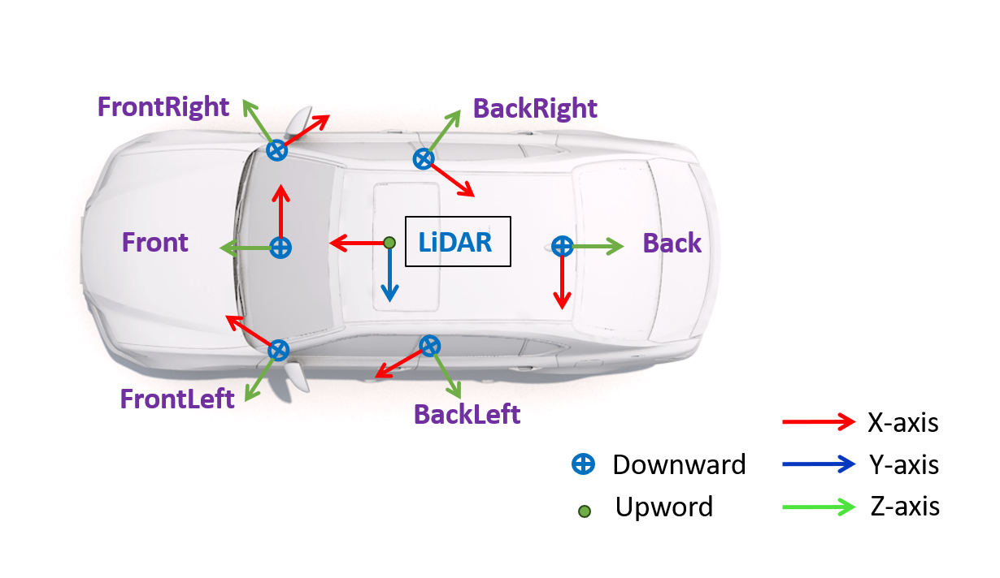

SDAC OverView
Collected in the CARLA simulation environment, SDAC provides data captured from multi-view RGB cameras and a 64-channel LiDAR sensor. All cameras have a field of view (FoV) of 110° and a resolution of 2048 x 1024 pixel. The LiDAR sensor has a vertical Fov of range [-24.8°, 4°], 80m maximum distance, and a scan rate of about 1.3M points per second.
Ego vehicle is created using the blueprints "vehicle.lincoln.mkz_2017", with 4.9m in length, 2.1m in width, and 1.5m in height. The placement of the sensors is as shown in the figure below.
SDAC is designed to be a comprehensive dataset that covers object, scene, and scenario-level corner cases. It is composed of two parts: SDAC-Snap and SDAC-Scenario. SDAC-Snap provides object and scene-level anomalies, SDAC-Scenario offers the temporal sequences of corner cases.
SDAC-Snap
SDAC-Snap provides RGB images from the front camera and LiDAR point clouds, with annotations including 2D/3D bounding boxes as well as semantic/instance segmentation masks. There are different anomaly subsets focus on different specific anomalous conditions.
Normal
The Normal subset is captured in the clear sunny environment with instances of normal classes. SDAC treats car, motorcycle, bicycle and person as normal classes. There are a total of 2657 examples in the Normal subset, with 1861 in the training set and 796 in the validation set.
RainFog
RainFog contains scene-level anomalies focusing on domain shifts in weather conditions. The weather in the RainFog subset is either a rainy or foggy day. This subset contains the same classes as the Normal subset.
Rainy DayFoggy Day

TruckBus
The TruckBus subset focus on object-level anomalies. It only contain objects of two novel classes that have not been seen in Normal: truck and bus. This subset is designed to investigate the model performance when the boundary of known and unknown classes is ambiguous, e.g. cars and trucks.
TruckBus
Props
The Props subset focus on object-level anomalies. It contains various types of obstacles (e.g., box, traffic cone) that are labeled as unknown.
Accident
The Accident subset is designed to simulate accident scenes in which objects appear in unusual locations or positions under different weather conditions. It contains both object-level and scene-level anomalies. There are 4 different classes in this subset: car, person, truck and bus. Within each scene, there is an overturned vehicle belonging to the car/truck/bus classes, as well as a person lying on the road ahead of the ego.
SDAC-Scenario
SDAC-Scenario provides scenario-level corner cases. It focuses on pre-crash and crash scenarios.
Records of corner cases are grouped by patterns. Each record is about 10 seconds long and all sensors are synchronized and captured in 10HZ. Objects hold the same id throughout the sequence for agent tracking. In most records, we provide the front camera images and point clouds as well as associated annotations. For scenarios such as a vehicle is going to merge from the entrance, we provide images from 6 cameras, providing a 360° Fov and the box labels in each view.
Something suddenly runs into the road
Unexpected object or entity such as children suddenly enters the road.
Accident ahead
A visible accident or collision ahead of the path of the ego vehicle.
Visual obstruction
An obscured object suddenly appears in the view of the ego vehicle, leaving insufficient time for the ego vehicle to react with necessary safety measures
Run the red light
A vehicle intentionally or unintentionally disregards a red traffic signal and proceeds through the intersection without stopping.
Lane changes suddenly
A vehicle suddenly changes the lane and drives into the current path of the ego vehicle.
Lead car brakes/slow down suddenly
A Vehicle ahead of the ego vehicle suddenly applies the brakes or significantly reduces its speed
Fails to Yield at Non-Signalized/Signalized Junctions
Ego fails to yield the right of way to another vehicle or pedestrian at intersections, crosswalks, or entrance/exit ramps